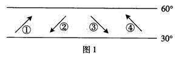
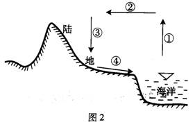
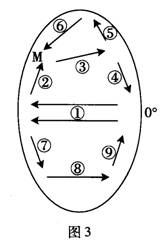
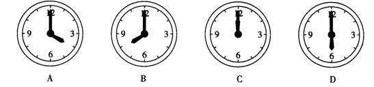
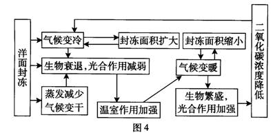
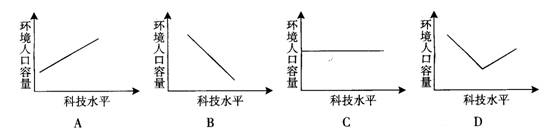
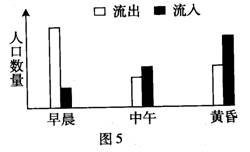
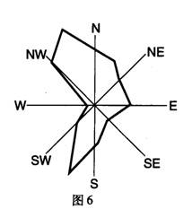
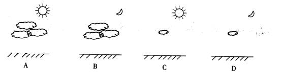

2009年广东省学业水平测试
制作：吕群
幻灯片切换效果
None - Fade - Slide - Convex - Concave - Zoom
选择班级
幻灯片样式
Black (default) -
White -
League -
Sky -
Beige -
Simple
Serif -
Blood -
Night -
Moon -
Solarized
1．赤道平面与黄道平面的夹角是
A．0°
B．23°26′
C．66°34′
D．90°
2．形成珠江三角洲的主要外力作用是
A．风化作用
B．侵蚀作用
C．搬运作用
D．沉积作用
3．下列影响农业生产的区位因素中，属于自然因素的是
A．劳动力
B．土壤
C．技术
D．市场
4．夏至日这一天，下列地点白昼最长的是
A．哈尔滨
B．北京
C．上海
D．广州
5．从自然因素考虑，下列四个地形区中单位里程高速公路建设成本最高的是
A．东北平原
B．华北平原
C．云贵高原
D．内蒙古高原
读图1，结合所学知识，回答6～8题。
6．图1四个箭头中能正确表示全球该纬度带近地面盛行风向的是
A．①
B．②
C．③
D．④
7．在大陆西岸，长年受该纬度带盛行风影响的气候类型是
A．地中海气候
B．温带大陆性气候
C．温带季风气候
D．温带海洋性气候

8．副热带高压控制下的地区的天气特征是
A．高温多雨
B．高温少雨
C．温和多雨
D．温和少雨
9．下列选项与逆城市化成因无关的是
A．市中心环境质量下降
B．城乡之间交通条件不断改善
C．郊区基础设施日益完善
D．乡村人口出生率高
10．下列著名风景名胜主要由内力作用形成的是
A．黄河壶口瀑布
B．华山西峰绝壁
C．广西桂林芦笛岩溶洞
D．海南天涯海角沙滩
11．2009年2月澳大利亚发生大面积森林火灾，为快速准确获得受灾面积状况，适宜采用的方式是
A．遥感
B．地理信息系统
C．全球定位系统
D．实地调查
读水循环示意图（图2），结合所学知识，回答12～13题。
12．该示意图中四个箭头共同表示的水循环是
A．海上内循环
B．陆地内循环
C．海陆间循环
D．地表水与地下水间循环
13．人类活动影响最大的水循环环节是
A．①蒸发
B．②水汽输送
C．③降水
D．④地表径流
14．广东盛产荔枝，山东盛产苹果。出现这种差异主要受以下哪种因素影响
A．水分
B．热量
C．光照
D．土壤
15． 20 世纪五十年代以来，世界人口迁移日益频繁。影响大量人口迁入美国的主要因素是
A．自然环境
B．经济
C．政策
D．宗教
16．根据世界陆地自然带的分布规律，广东所处的自然带属于
A．亚热带常绿阔叶林带
B．温带落叶阔叶林带
C．亚热带常绿硬叶林带
D．热带雨林带
17．由沿海向内陆的地域分异规律（经度地带性）表现最明显的是
A．北美大陆中纬地区
B．南美大陆中纬地区
C．亚欧大陆中纬地区
D．非洲大陆中纬地区
18．我国下列地区中，水资源最紧缺的是
A．东北地区
B．华南地区
C．西南地区
D．华北地区
19．下列有关目前世界城市化进程的叙述，正确的是
A．发达国家城市人口比重大、增长快
B．发达国家城市人口比重小、增长慢
C．发展中国家城市人口比重小、增长快
D．发展中国家城市人口比重大、增长慢
我国是自然灾害多发的国家。结合所学知识，回答20～21题。
20．下列灾害中，属于地质灾害的是
A．泥石流
B．干旱
C．洪涝
D．台风
21．我国东南沿海台风多发的季节是
A．春季和夏季
B．夏季和秋季
C．秋季和冬季
D．冬季和春季
22．春分日这一天，海南省某地（20°N,110°E)的正午太阳高度是
A．90°
B．70°
C．20°
D．0°
图3是太平洋洋流分布简图。读图并结合所学知识，回答23～25题。
23．图中数字所示的洋流中属于暖流的是
A．①③④⑥
B．③④⑦⑧
C．②③⑤⑦
D．②⑤⑦⑨
24．对南美洲中低纬度西海岸荒漠环境的形成起重要作用的洋流是
A．①
B．⑦
C．⑧
D．⑨
25．M地有世界著名的渔场，其形成原因主要是
A．暖流经过
B．寒流经过
C．寒暖流交汇
D．底部海水上升
26．我国东部山区修筑道路，要注意防范植被破坏后产生下列哪种问题
A．台风肆虐
B．水土流失
C．断层活动
D．沙尘暴
珠江三角洲的基塘农业经历了“桑基、蔗基→果基、花基”的发展历程。根据所学知识，回答27～28题。
27．按农业地域类型分，珠江三角洲的基塘农业属于
A．乳畜业
B．商品谷物农业
C．混合农业
D．大牧场放牧业
28．引起这种农业生产方式变化的主要区位因素是
A．市场需求
B．技术条件
C．劳动力价格
D．国家政策
29．从自然因素考虑，下列地区最不利于发育为城市的是
A．河口三角洲
B．河流汇合处
C．冲积扇平原
D．河流发源地
30．2008年8月8日20时第29届奥运会在北京开幕，中国留学生在伦敦观看现场直播，此时墙上悬挂的时钟是
A．
B．
C．
D．
2007年，由政府间气候变化专门委员会（IPCC）呈现的报告提到本世纪地球的温度将会上升2℃～6.4℃。结合所学知识，回答31～32题。
31．全球气候变暖带来的结果可能是
A．全球降水将普遍增加
B．海平面将上升
C．全球物种将大量增加
D．高纬度地区的农作物种植面积将缩小
32．下列措施中，有利于减缓全球气候变暖趋势的是
A．植树造林
B．焚烧垃圾发电
C．节约用水
D．增加矿物燃料的使用量
33．住宅、工业、商业等经济活动的付租能力是有差别的。下列用地地租由高到低排列正确的是
A．住宅、工业、商业
B．工业、商业、住宅
C．商业、住宅、工业
D．住宅、商业、工业
34．城市热岛效应形成的主要原因是
A．城市空气中粉尘多，增强了太阳辐射
B．城市中人工湖泊多，蒸发量大
C．城市产业活动密集，释放大量的人为热
D．城市中心 CO2浓度比郊区低
洋面封冻产生的效应叫做洋面封冻效应，图4是洋面封冻与水、气候、生物相互作用关系示意图。结合所学知识，回答35～36题。
35．洋面封冻与水、气候、生物相互作用关系体现了
A．气候会影响植被，但不会影响土壤
B．各地理要素相互联系、相互制约、相互渗透
C．某一地理要素的变化不会导致其他要素的变化
D．地理环境的差异性
36．图中由“二氧化碳浓度降低”导致“气候变冷”的过程是因为
A．大气对太阳辐射的散射作用增强
B．大气对地面辐射的吸收作用减弱
C．氟氯烃对臭氧的破坏作用加强
D．大气的保温效应加强
37．我国煤炭主产区煤炭外运主要采取输煤和输电相结合的形式。输电就是将煤炭就地转化为电力，再通过电网输送，这种做法对当地的不利影响是
A．气候变暖降水减少
B．产业结构更加单一
C．当地就业机会减少
D．加重当地大气污染
38．下列措施中，有利于青藏铁路沿线生态环境保护的是
A．把冻土层融化，为植物提供水分
B．为野生动物建立新的栖息地，不准野生动物迁徙和穿越铁路
C．铁路沿线大力发展耕作业，为游客提供土特产
D．旅客的生活垃圾不能沿途丢弃，统一收集到终点站集中处理
39．下列行为方式值得提倡的是
A．在餐厅用餐时使用一次性木筷
B．农贸市场免费提供塑料袋
C．最后离开教室时关灯
D．刷牙或洗衣服时一直开着水龙头
40．下列地区中，太阳能资源最丰富的是
A．东北平原
B．青藏高原
C．四川盆地
D．珠江三角洲
41．下列四幅图中，能正确反映科技水平与环境人口容量关系的是
A．
B．
C．
D．
42．聚落的建筑风格与自然环境密切相关。下列地区和当地民居搭配不相符的是
A．西双版纳——竹楼
B．江南地区——尖顶屋
C．陕北延安——窑洞
D．云贵高原——蒙古包
43．当前，随着水电开发在西南地区的展开，一批产业被吸引到西南电力富集区。下列工业最适合布局在西南电力富集区的是
A．石油化工
B．服装加工
C．汽车制造
D．有色金属冶炼
44．在河流中下游地区围湖造田，对当地地理环境的影响是
A．生物物种增加
B．调蓄洪水能力提高
C．抵御自然灾害能力降低
D．航运能力提高
45．广东人经常喝凉茶，四川人喜欢吃麻辣。形成这种饮食习惯差异的主要自然因素是
A．植被
B．土壤
C．气候
D．地形
46．GPS是进行野外考察与探险的重要工具，其作用是
A．随时知道自己所在地的地理坐标
B．随时知道自己所在地的气候
C．随时知道自己所在地的地形
D．随时知道自己所在地的水文状况
2007年日本全国1800多个地方教育委员会中有238个已经制定了削减中小学数量的计划，在今后3～5年内，将减少848所公立小学和269所公立中学，约占全国公立中小学总数的三十分之一。结合所学知识，回答47～48题。
47．日本计划关闭或合并部分公立中小学的最直接原因是
A．因校舍不符合现行抗震标准而关闭
B．因经济危机而合并
C．为节约土地资源而关闭
D．因人口出生率下降、人学人口减少而合并
48．下列国家中，与日本人口增长模式相似的是
A．印度
B．巴西
C．英国
D．埃及
广东省将船舶制造业列为本省发展先进制造业的五大重点产业之一，并提出把以广州为主的珠江口地区建设成为全国三大造船基地之一。结合所学知识，回答49～50题。
49．将船舶制造业列为重点发展产业的积极意义在于
A．推动广东省高新技术产业快速发展
B．促进广东省产业结构优化调整
C．缓解广东省能源资源紧缺的状况
D．改善广州市及周边地区的环境质量
50．不属于广州建设造船基地的区位优势是
A．优惠的政策
B．良好的航道和港口条件
C．广阔的市场
D．丰富的能源和原材料
51．如果要在太阳系的行星中建一个人类居住点，下列行星中条件较适宜的是
A．天王星
B．木星
C．土星
D．火星
52．图5为城市某功能区一天内不同时段的人口流动状况，该功能区是
A．商业区
B．住宅区
C．工业区
D．行政区
53．南方地区以水田农业为主，北方地区以旱地农业为主，西北地区发展畜牧业。形成这种生产活动地域差异的主要自然原因是
A．降水的差异
B．地形的差异
C．土壤的差异
D．热量的差异
54．为了减少运费成本，下列工厂最需要接近原料产地的是
A．电子装配厂
B．甘蔗制糖厂
C．瓶装饮料厂
D．服装加工厂
55．图6是某城市的风向玫瑰图。现该城市计划在城郊兴建一座火电厂，从风向考虑，应布局在
A．东郊
B．南郊
C．西郊
D．北郊
56．台风是热带气旋强烈发展的一种特殊形式，其近地面的气流特征是
A．中心气流下沉，水平气流由四周流向中心
B．中心气流下沉，水平气流由中心流向四周
C．中心气流上升，水平气流由四周流向中心
D．中心气流上升，水平气流由中心流向四周
新疆是我国重要的棉花产区和畜牧业基地。结合所学知识，回答57～58题。
57．该地区农牧业生产所需水源主要来自
A．湖泊水
B．咸水淡化
C．大气降水
D．冰雪融水
58．该地区种植棉花的有利条件是
A．光照充足
B．水源丰富
C．科技发达
D．劳动力丰富
伊春市位于黑龙江省东北部的小兴安岭，是我国重要的家具生产基地，目前已成为全国资源枯竭城市转型试点。结合所学知识，回答59～60题。
59．伊春市被列为资源枯竭城市的原因是
A．煤炭资源枯竭
B．水资源枯竭
C．石油资源枯竭
D．可采林木资源枯竭
60．最适宜该市转型发展的产业是
A．IT等高新科技产业
B．森林观光等生态旅游业
C．服装加工等劳动密集型产业
D．以风力发电为主的能源工业
61．下列有关太阳活动的叙述，正确的是
A．太阳黑子活动周期大约为11年
B．太阳活动产生流星雨现象
C．太阳活动的主要标志是太阳风
D．耀斑出现在色球层
62．区域农业生产与地理环境密切相关。下列组合正确的是
A．四川盆地 ― 绿洲农业
B．宁夏平原 ― 灌溉农业
C．洞庭湖平原 ― 水稻种植业
D．长江三角洲 ― 大牧场放牧业
63．吸引美国、日本和德国等国汽车生产厂商到中国投资建厂的主要区位因素是
A．广阔的汽车消费市场
B．廉价的劳动力和地租
C．先进的汽车制造技术
D．雄厚的汽车产业基础
64．甲城的张小姐喜好国际名牌服装，每年春季都会乘坐3小时的客车到乙城购买新上市的品牌服装，今年她还顺便看望了专程到乙城住院的邻居。下列关于甲城、乙城的叙述，正确的是
A．甲城的城市等级比乙城高
B．乙城的城市等级比甲城高
C．乙城的服务功能更为齐全
D．甲城的城市规模大于乙城
65．我国以下生产活动符合可持续发展道路的是
A．农业生产 ― 围湖造田，陡坡开荒
B．农业生产 ― 退耕还林还草，发展生态农业
C．工业生产 ― 先污染，后治理
D．工业生产 ― 循环经济，清洁生产
66．我国“十一五”期间节能减排的主要目标是单位国内生产总值能耗降低20％左右、主要污染物排放总量减少10％。实现该目标的措施可行的是
A．改进能源利用技术，减少能耗和排污
B．推广使用节能产品
C．严禁使用排放污染物的能源
D．全部使用非机动车，大量节约能源
67．下列图幅中，能解释新疆地区瓜果特别甜的是
A．
B．
C．
D．
我国地域辽阔，区域差异明显。结合所学知识，回答68～70题。
68．下列关于我国不同地区自然地理特征的描述，正确的是
A．塔里木盆地黄土广布
B．东北平原土壤肥沃
C．云贵高原地形平坦
D．长江三角洲河网密布
69．下列关于我国产业活动的叙述，正确的是
A．重工业基地集中在东南沿海
B．黄河流域比长江流域航运业发达
C．橡胶种植业主要分布在海南和云南
D．产业转移趋势主要由东部沿海向中西部转移
70．下列关于我国不同地区环境问题的叙述，正确的是
A．西南地区地质灾害严重
B．东北地区酸雨危害严重
C．西北地区土地荒漠化严重
D．华南地区土壤盐碱化严重